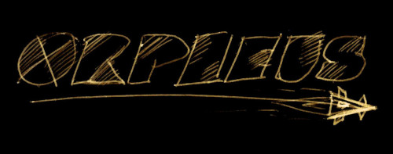
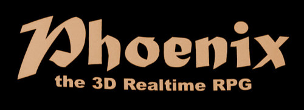
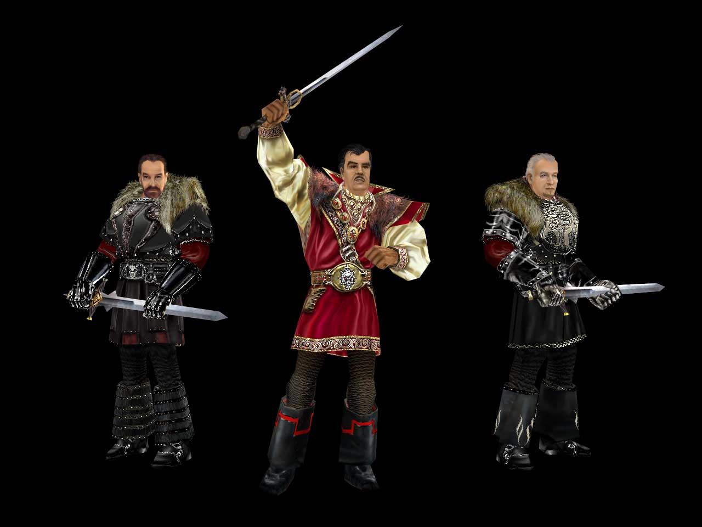

../ Ein Interview mit Tom Putzki
zum 20. Jubiläum von GOTHIC - Part 1
von Phoenix Tales
Audio: TomPutzki_PhoenixTales_20thAnniversary_Part1.ogg
Interview Transkript
Oliver: Danke, dass du dir die Zeit genommen hast, wir würden einfach mal direkt starten, oder?
Tom: Sehr sehr gerne, aber habt bitte keine all zu hohen Erwartungen. Ich habe mich jetzt ein paar Wochen hier auf Discord entsprechend im Channel rumgetummelt und hab mir mal das "Phoenix - The Game", die Seiten angeguckt und alles was dazu gehört, auch euer Interview mit der Gamestar gelesen. Also ich gehe davon aus, dass euer Wissen über Gothic deutlich das meine übersteigt.
Oliver: [lacht] Okay!
Florian: [lacht] Hast du wirklich das ganze Interview gelesen? Das ist ja beeindruckend, das war ziemlich groß.
Tom: Ja ja, ich hab nur die programmierspezifischen Stellen etwas geskipped, aber ansonsten habe ich das gelesen, japp.
Oliver: Cool!
Florian: Das freut mich sehr, cool! Also nur zur Info, wir wollen das Interview anlässlich zum 20. Jubiläums von Gothic machen. Am 15. März soll das dann online gehen.
Tom: Jupp.
Florian: Und das dann auch in unserem Gothic Archiv veröffentlichen, das hast du dir ja auch schon angeguckt soweit ich weiß.
Tom: Ja.
Florian: Da wollen wir dann auch zum Jubiläum eine neue Version veröffentlichen und hatten vorher auch schon mit Mike ein kleines Interview gemacht. Da habe ich dir ja auch erzählt, dass ich diese Ordner mitgenommen habe, die ich dann versuche zu scannen.
Tom: [lacht] Ja, mein Gott.
Florian: Vielleicht erinnerst du dich ja noch an ein paar Sachen die wir so gesammelt haben an Fragen zu Gothic 1, dann hilft uns das auch bei unserem Modprojekt Phoenix. Aber gucken wir mal an was du dich noch so erinnern kannst.
Tom: Ja schauen wir mal. Ich hab inzwischen schon wieder mit Mike telefoniert, also dieser Discord-Channel hat uns da auch wieder zusammengeführt.
Florian: Das ist doch schön... Also, eine erste Frage wäre, wir haben ja diesen Namen "Phoenix" gewählt für unser Projekt, weil wir auch dachten, dann erinnert ihr euch direkt daran und wisst was damit gemeint ist. Ursprünglich war ja der Arbeitstitel "Orpheus".
Tom: Ja, zu Zeiten von Greenwood Entertainement war das Orpheus, richtig.
Florian: Okay. Da hab ich mich gefragt, wie kam es dazu, dass ihr später diesen Arbeitstitel doch nochmal umgeworfen habt und dann das ganze "Phoenix" genannt habt.
Tom: Naja, also alle Titel die bei Greenwood in der Entwicklung waren, haben einen Namen aus der griechischen Mythologie als Arbeitstitel erhalten, alle. Bei unserem Projekt, das wir da schon leicht angefangen haben, mit einigen Dokumenten, einigen Ideen und so weiter war es halt Orpheus.
Greenwood gehörte der FunSoft-Gruppe an und dann gab es Probleme mit der FunSoft-Gruppe, der Geldhahn bei Greenwood wurde zugesperrt. Wir haben halt zusammengessesen und überlegt was man tun kann, wie wir überleben können und dann kam es zu einem Management Buyout der Greenwood Chefs aus der Funsoft-Gruppe und aus rechtlichen Gründen durch diesen Management Buyout bedingt, konnten wir dieses Unternehmen Greenwood nicht mehr weiterführen. Nur noch das Label Greenwood. Sozusagen ein Greenwood Spiel aber nicht mehr Greenwood die Firma. Und so haben wir uns halt zusammengesetzt und neue Unternehmen gegründet. Und bei Alex, Mike, Stefan und mir war das halt Piranha Bytes. Und mit dem Start in das eigene Unternehmen, was eben zum Oktober '97 begann, haben wir dann natürlich auch einen neuen Projektnamen vergeben, wie "Phönix aus der Asche" natürlich.
Florian: Das macht Sinn. :)
Tom: Ja.
Florian: Ja cool! Dann habe ich ne Frage zu deiner Rolle in der frühen Konzeptionsphase von Gothic, also du hast ja die ersten Level modelliert. Wie war da so die Arbeitsteilung, hast du da noch ein bisschen in der Story mitgewirkt und in der Entwicklung des Settings, wie war da so die Aufteilung?

Tom: Ja. Ich meine wir waren ja vor Ort nur zu viert. Es gab ja noch keine Mitarbeiter, es gab nur die externe Programmiercrew, die Mad Scientists, die halt in Norddeutschland saßen, also so 250 km von uns weg. Und natürlich habe ich wie alle vier an der Story, an dem Setting, an Ideen, am Gamedesign mitgewirkt. Natürlich nicht so stark wie Mike oder Alex natürlich, aber meinen Teil habe ich natürlich auch beigetragen.
Ansonsten war ich ja wie gesagt für das Modellieren der 3D Welt zuständig und als es dann weiter ging in die weitere Phase, als das ganze immer mehr ein Projekt wurde und wir festgestellt haben, dass wir aber jetzt auch externe Geldgeber und Fans und sonstwas brauchen, habe ich mich halt auf den Bereich des Business, des Publisherfindens, der Pressearbeit und Kommunikation gestürzt.
Florian: Kannst du dich bei dieser frühen Phase als ihr nur zu viert wart noch dran erinnern, ob vielleicht irgendwelche Ideen spezifisch von dir kamen?
Tom: Hmh... Also, wie gesagt, In Extremo einzubauen, das kommt mit Sicherheit von mir. Mit einem starken Anschub von Markus Kark, aber das war die Zeit wo wir schon nicht mehr in der ersten Phase waren. Also sorry, erste Phase, welche Ideen da jetzt von mir oder sonstwem sind, keine Ahnung. Also ich weiß, dass ich an der Implementierung von diversen NPCs nicht völlig unschuldig bin. Als da sind: Mud und Baal Netbeck.
Oliver: Zu diesen Cameos haben wir später noch eine Frage, aber wenn du sie grade erwähnst, können wir diese auch vorziehen. Das sind ja bewusst Cameos, die ja nach Größen der 90er Jahren Popkultur entstanden sind, oder?
Tom: Teils ja, teils sind es aber auch Journalisten aus der Gamesbranche, die da in dem Spiel verewigt sind. Ich hatte die Journalisten halt um Fotos ihres Gesichts und die Erlaubnis zur Verwendung im Spiel gebeten und sagen wir es mal so, wenn ein Journalist sein eigenes Gesicht im Spiel verewigt sieht, dann ist er dem ganzen vielleicht nicht grundsätzlich negativ gegenüber eingestellt. ;)
Oliver: Also das war tatsächlich auch schon bewusst Marketing, die Leute dort mit zu verewigen? Also es war ein netter Gag aber es hat auch sicherlich fürs Marketing geholfen, oder?
Tom: Ja natürlich.
Oliver: Cool! Wir hatten noch zwei andere Namen auf der Liste, die uns auch auf dem Discordserver zugetragen wurden: "Charlotte Roche" und "Steve Gätchen"
Tom: Ja richtig!
Oliver: Viva Moderatoren oder wie ist das?
Tom: Eh ja, sie war damals Viva Moderatorin, heute kann man sie eher unter dem Begriff... "Bestsellerautorin" packen. :D
Oliver: Ich wollte gerade sagen, der Name kommt mir aus einem anderen Kontext bekannt vor.
Florian: "Feuchtgebiete".
Tom: Genau das, genau das!
Oliver: Interessant!
Florian: Und der Steve Gätchen, wer war das?
Tom: Das war'n Fernsehmoderator, ich gucke mal wofür der, wenn überhaupt, so einigermaßen bekannt ist... Also damals war der auf jeden Fall ein neuer hipper Fernsehmoderator und wenn ich einen Fernsehmoderator, der wöchentlich im TV zu sehen ist, wenn ich den ins Spiel kriegen kann, dann nehm ich den natürlich.
Wir hatten auch noch solche Leute, wenn euch die Namen noch was sagen: Lotto King Karl war drin oder Bürger Lars Dietrich, solche Leute halt.
Florian: Wie kam das mit Mud? Mit dem Nils Ruf von dem der glaube ich ein bisschen "inspiriert" war...
Tom: Ach ja, Nils Ruf! Nils Ruf hatten wir auch noch als Gesicht bekommen und, vorsichtig formuliert, mussten wir da einen speziellen Character machen weil Nils Ruf hatte sich auch im echten Leben als "interessanter Typ" herausgestellt, der sehr widersprüchlich agierte. Deswegen haben wir mit seinem Gesicht Mud geschaffen und den auch auf interessante Art und Weise mit Charakterzügen ausgestattet.
Oliver: Unvergessen. Ich glaube er ist ja auch einer der berühmtesten Gothic NPCs geworden.
Tom: Das hoffe ich doch.
Florian: Wenn wir dann gerade schon bei Gesichtern sind, es wurden ja auch einige Gesichter von Entwicklern, glaube ich, im Spiel verewigt. Da haben wir auch in Discord drüben ein paar Bilder gepostet. Da sieht man diese Erzbarone. Wenn du da ganz nach oben scrollst, da ist so ein Erzbaron Bild mit'ner Frau. Weißt du wer darauf dargestellt ist?
Tom: Eh ja, das bin ich.

Florian: [lacht] Das dachte ich mir schon [hatte das auch irgendwo mal ins Forum geschrieben :)]. Hat das dann Uwe Meier irgendwie gemalt so als Gag?
Tom: Ja ganz genau. Ne ich habe ihn drum gebeten ob er das vielleicht für mich machen könnte. Und joa, dann ist es das geworden.
Florian: Cool. Und weiter unten, wo man die drei Erzbarone sieht, da habe ich das Gefühl, der Erzbaron in dieser roten Rüstung könnte Uwe Meier selber sein.
Tom: Ja, das ist absolut richtig.
Florian: Und weißt du auch noch wer die anderen beiden sein könnten?
Tom: Ja das habe ich mich zu dem Zeitpunkt, als du mir die Bilder rüber geschickt hast, auch gefragt. Ich ahnte irgendwie, dass die Frage kommt.
Florian: Ich habe das auch Mike (Michael Hoge) gefragt, der meinte da hat Uwe nur ein schönes Bild hingemacht und da hätte sich niemand mehr dabei gedacht. Wahrscheinlich ein Erzbaron der früher mal in der Burg gelebt hat, bevor der Gefangenenaufstand stattgefunden hat.
Tom: Ja, das kann gut sein. Ne aber auf dem Bild das du zu erst angesprochen hast, mit der Frau im Arm, also wie gesagt das bin ich. Und das neben mir sind die Gesichtszüge meiner damaligen Ehefrau.
Florian: Verstehe. Um dann noch einmal zu der früheren Phase zurück zu springen. Also du hast ja damals die erste Welt modelliert, war das beschränkt auf diesen Vertical Slice, wo du diese Dungeons modelliert hast oder hast du auch die Oberwelt gemacht?
Tom: Ja ich hab auch mit der Oberwelt angefangen. Aber das war dann die Phase, wo es sehr schnell zur Einstellung, bisschen später, von Horst und Mario kam und nachdem ich die etwas angeleitet habe und in unsere Arbeitsweise eingeführt habe, waren diese in zwei, drei Monaten so viel besser als ich hätte jemals sein können, dass es dann wirklich gut war.
Nein, aber so die erste Version des Psi-Camps. Ihr kennt das Bild ja glaube ich, also die Bilder von diesem hölzernen Stelzen-Dorf im Sumpf.
Florian: Ja.
Tom: Das hatte ich gemacht. Die erste Version des Alten Lagers hatte ich ebenfalls gemacht.
Florian: Ich habe damals das Interview gesehen, wo du darüber gesprochen hast, wie du Modellieren gelernt hast, war ganz interessant. Ich habe auch nur modellieren gelernt für dieses Projekt. :)
Tom: [lacht]
Florian: Wenn du im Discord ganz nach oben hüpfst, dann ist da ein Bild vom Alten Lager. Ist das noch deine Version?

Tom: Ja, ziemlich sicher. Weil es sieht einfach hässlich aus.
Florian: [lacht] ... Aber was wir uns dazu gefragt haben, da sieht man ja diese ganzen Wüstentexturen. Hattet ihr das so damals in der Planung, dass es mehr ein orientalisches Setting wird?
Tom: Nicht unbedingt orientalisch, aber schon etwas... wir wollten ja bewusst etwas nicht klassisch fantasymäßiges, also "grüne Wiesen, bunte Blümchen" und so weiter, schaffen und deswegen hat man so ein karges Texturenset mal gefunden. Außerdem waren wie gesagt die Möglichkeiten und auch die Fähigkeiten auf Seiten der Texturenerstellung durchaus noch beschränkt. So hat man genommen was man finden konnte und was sich kacheln lies und was einigermaßen aussah.
Oliver: Und auch diese Design Arts, die es teilweise gab, von Ralf Marczinczik glaube ich, die so ein bisschen orientalisch angehaucht waren, so mit Erzbaronen a la Sultansharem, hat sich das gegenseitig ein bisschen beeinflusst? Kamen erst die Texturen und hat dann der Art Designer darauf inspirierend noch Artworks gemacht?
Tom: Also sowohl als auch. Ich meine der Art Director der ganzen Geschichte war Mike und der hat einfach Look and Feel und Stil festgelegt. Es kann durchaus sein, dass manche alten Concept Arts, sei es jetzt von Uwe oder von Mike selber oder sei es von Ralf Marczinczik, dass diese einfach entstanden sind, einen Weg aufzeigen der dann verworfen wurden. Wo wir gesagt haben, oder vor allem auch Mike gesagt hat: Ne, nicht so.
Es kann sein, dass wir Wüste damals schon cool fanden aber let's face it, die Location ist ja einfach von der Räumlichkeit sehr begrenzt. Es ist ja eine zwar sehr "freie" Welt aber eben auch eine kleine Welt und da jetzt wirklich von Sumpf über Wüste und dann nach Möglichkeit noch Schnee bedeckte Berge und Gletcher und sowas... ne das ist alles ein bisschen viel.
Florian: Das haben sie ja dann in Gothic 3 so ein bisschen gemacht. War dann aber alles sehr zusammengepfercht irgendwie, diese drei Klimata... Dann habe ich in dem Discord-Channel so eine Karte gepostet, die hießen glaube ich Edgarkarten.
Tom: [lacht] Ja.
Florian: Ist das auch so eine Marketingkampagne von dir gewesen?

Tom: Ne, nicht von mir, das war wie gesagt, von so einer Agentur, die der Publisher halt angeheuert hat. Ich war natürlich irgendwie irgendwo involviert. Aber das war von dieser Agentur F&P-Marketing, die Adresse steht ja noch drauf. Ich habe keine Ahnung, ob es die heute noch gibt oder sowas. Aber das war auf jeden Fall... naja man halt einfach einen Wettbewerb gemacht, einen Gothic-Girl Contest.
Oliver: Und die Gothic-Babes die es dann tatsächlich ins Spiel geschafft haben, die kamen dann auch tatsächlich von diesem Wettbewerb?
Tom: Ja ja! Ich entsinne mich, dass wir wirklich eine ganze Menge Fotos bekommen haben und uns dann wirklich einige aussuchen konnten.
Florian: Und ich hab gesehen auf einer dieser Karten, die habe ich jetzt leider nicht, da wurde auch nach jemanden gesucht der die Musik für Gothic macht. Und da haben wir uns gefragt, hat jemals jemand Musik für das Spiel gemacht vor Kai Rosenkranz?
Tom: Also ganz ehrlich, ich weiß es wirklich nicht ob wir da überhaupt irgendwas drin hatten. Oder ob wir uns da an einer freien Soundbibliothek bedient haben. Also ich weiß oder ich kann mich jedenfalls entsinnen, dass wir damals irgendwo irgendwie so eine Musikbibliothek entweder gekauft haben, oder eine freie zur Verfügung hatten.
Aber soweit ich das im Kopf habe, hat sich vor KaiRo da niemand intensiv mit auseinandergesetzt.
Florian: Okay. Diese Frage kam erst gestern in unserem Channel. Da hat jemand gefragt ob für Gothic 1 mal ein Konsolenport geplant gewesen wäre.
Tom: Ja, sicher. Das ist der Grund, weswegen die Steuerung von Gothic so ist, wie sie ist. Wir haben von Anfang an, also von den ersten Designideen, im Kopf gehabt "das muss auf einem Konsolengamepad" spielbar sein. Wie viele Knöpfe hatte ein Konsolengamepad zur damaligen Zeit? 10. Gut, also das heißt: Das gesamte Spiel muss mit 10 Tasten spielbar sein.
Das war über einen Entwicklungszeitraum von gut und gerne drei Jahren der Ansatz Gothic spielbar zu machen. Und die Maussteuerung wurde ja erst am Schluss eingeprügelt.
Florian: Ja, ja.
Oliver: Das macht ne ganze Menge Sinn. Jetzt rückblickend, wir diskutieren gerade in unserem eigenen Projekt viel über Steuerung. Wir mögen sie, wie sie ist aber wir würden gerne noch ein bisschen mehr herausholen und sie immersiver machen. Rückblickend, würdest du sagen: Die Steuerung, wie sie dann am Ende geworden ist, war das eine gute Designentscheidung, oder nicht?
Tom: [lacht] Also meine persönliche Meinung: Ich war derjenige, der das Spiel immer überall vorgeführt hat, sei es bei Publisher, sei es bei Presse, sei es auf Messen, sei es... egal. Ich habe das Spiel ja sehr sehr häufig anderen vorgespielt und kam perfekt mit den 10 Keys klar. Muss ich einfach sagen, so. Aber lange Rede kurzer Sinn, was wir damals durch "Scheuklappenarbeiten", durch Arbeiten an unserem Projekt und das sehr intensiv, sehr viel, sehr lange Tage, sehr lange Nächte und so weiter... irgendwann verlierst du so ein bisschen den Blick für die Außenwelt. Wenn du nur in deinem Projekt ganz tief drin steckst und wenn der Rest der kleinen Menschheit bei third-Person Spielen, 3D third-Person, in der Follower-Kamera, selbstverständlich eine Keyboard-Maus Steuerung erwartet, weil das seit 1996 oder 1997 durch Tomb Raider beispielsweise als Standard sich auf der Welt durchgesetzt hat, dann musst du das verdammt nochmal auch einbauen. Ob du das willst oder nicht. Weil der Rest der kleinen Menscheit erwartet das.
Durch Referenztitel entwickelt sich dann manchmal ein globaler Standard und den muss man einhalten, sonst hat man ein ernsthaftes Problem. Das haben uns dankenswerterweise Journalisten kurz vor der Fertigstellung als ehrliches Feedback gegeben und gesagt: "Ja, Tom, wir lieben dich, wir lieben Gothic und das ist alles ganz toll ABER... ihr bräuchtet jetzt verdammt nochmal ne Maus."
Florian: Die russische Community hat mittlerweile so ein Projekt, das nennt sich "Union" und die schreiben da so Engine Erweiterungen und da gibts jetzt auch eine Gamepad-Unterstützung. Also du kannst Gothic jetzt super mit einem Gamepad spielen und dann macht das ja auch Sinn. Ich denke das ist auch so meine bevorzugte Variante wie ich das Game spielen würde [heutzutage].
Oliver: Also wir sind jetzt inhaltlich mit dem ersten Fragenblock durch. Wir könnten dann erstmal ne Pause machen und uns in zwei, drei Minuten im nächsten Link treffen.
Tom: Super. Dann bis gleich.
[ Das Gespräch fand am 13.02.2021 statt. Das Audio wurde aufgenommen von Oliver, zugeschnitten von Florian und transkribiert von Sebastian. Zum zweiten Teil gehts hier.]